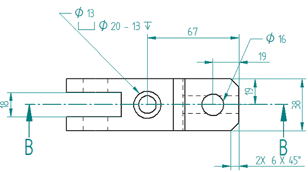
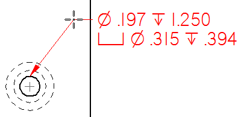
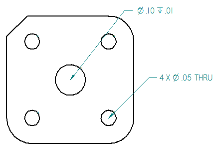

Place a feature callout
You can use a feature callout to extract a standard set of information based on the
type of hole, slot, or threaded feature you select. You can place feature callout
annotations, as well as dimensions whose dimension type is set to Feature Callout  . When you reference holes added with the Hole command, you can include a quantity note to count the number of equivalent holes
based on their type and other parameters in the Hole Options dialog box.
. When you reference holes added with the Hole command, you can include a quantity note to count the number of equivalent holes
based on their type and other parameters in the Hole Options dialog box.

-
Select the Callout command
 , and then delete any information in the Callout text and Callout text 2 boxes.
, and then delete any information in the Callout text and Callout text 2 boxes. -
On the General tab, click the Feature callout button
 .Note:
.Note:The Feature callout option causes the callout to reference the predefined property text strings on the Feature Callout page of the Callout Properties dialog box. The hole, slot, or thread geometry that you select when you place the callout determines which string is used to extract information. For more information, see Customize a feature callout.
-
Locate the edge of a feature, so that the center point symbol is displayed, and then click to place the callout.
Example:In the first example, the selected geometry is a cylindrical, flat-bottomed counterbore hole with a smaller coaxial hole. For this type of hole, the feature callout displays the information shown below.
- For the smaller coaxial hole (callout line 1)
-
Hole information (diameter symbol, diameter value, depth symbol, hole depth value)
- For the larger counterbore hole (callout line 2)
-
Counterbore information (counterbore symbol, diameter symbol, counterbore diameter value, depth symbol, counterbore depth value)

Example:In the second example, the predefined properties for hole callouts include a Hole Quantity Note (%QN) prefix definition on the Smart Depth tab (Dimension Style, Dimension Properties, Callout Properties) dialog box.

The evaluated information is displayed only when the hole count quantity is greater than one, that is %QC>1.

Note:To use the hole count code with legacy draft files, you must force the drawing views to update using Ctrl+Shift+Update Views command.
To learn how to predefine the information that you are referencing, see Define smart hole properties in the Dimension style.
How do I
Place a calloutPlace a hole callout
Customize a feature callout
Define smart feature properties in the Dimension style
Learn more
Formatting callout text and borderManipulating callouts
Look up more details
Callout commandCallout command bar
Callout Properties dialog box
General tab (Callout Properties dialog box)
Text and Leader tab
Feature Callout tab
Border tab (Callout Properties dialog box)
Quick links
Place a feature callout dimensionBasic reference and property text rules
Format codes to modify reference and property text output